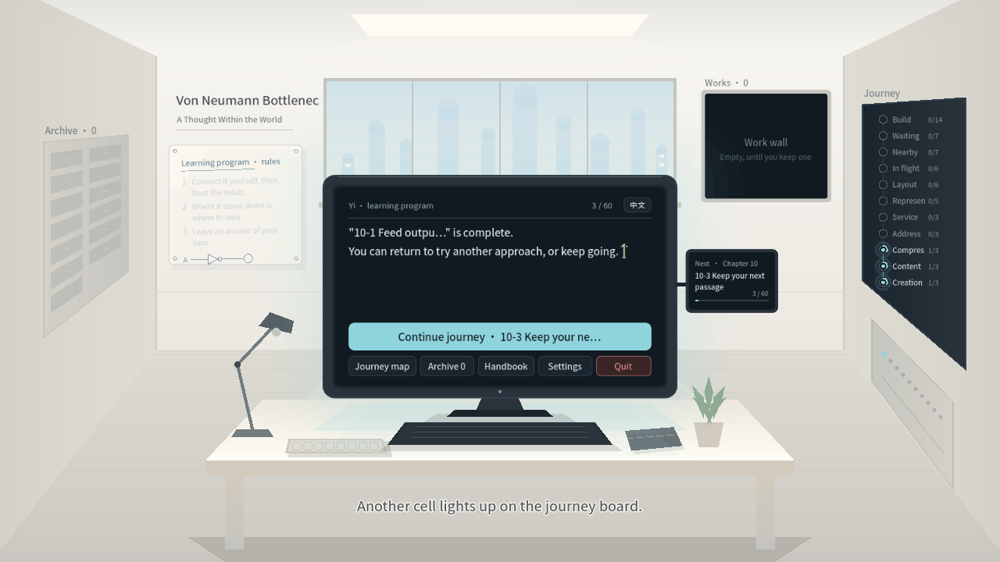
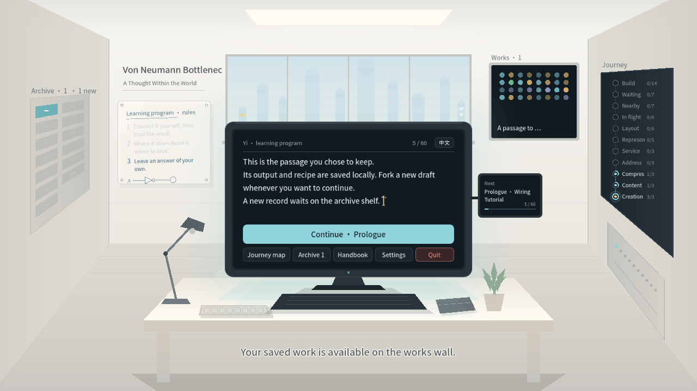
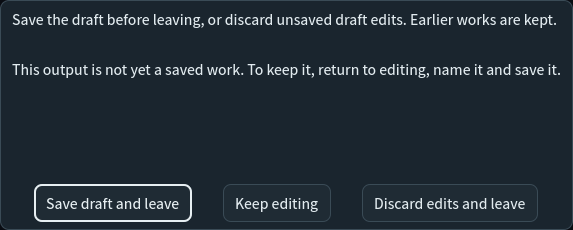
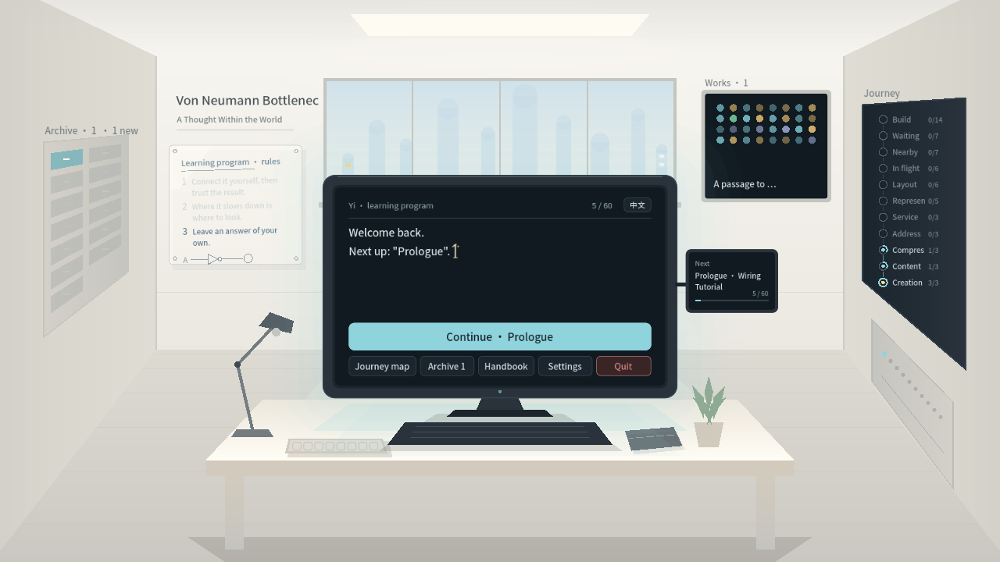
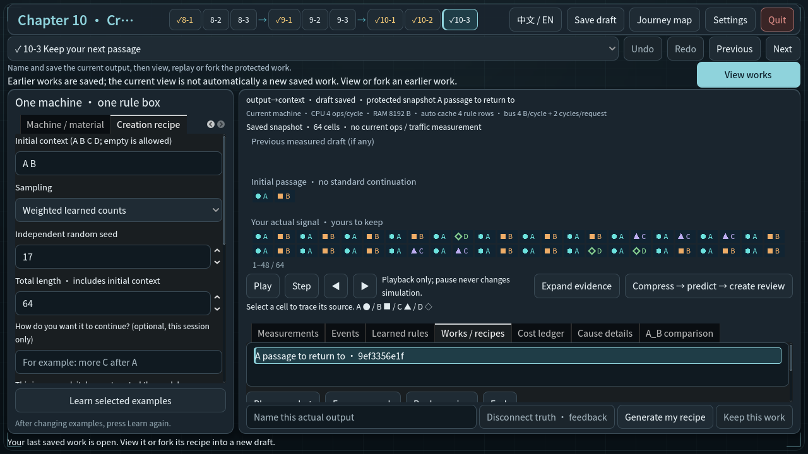
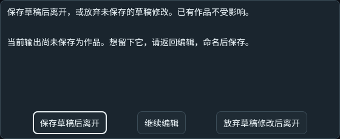
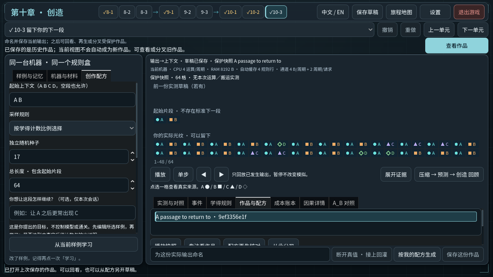

作品与实验室返回
真实控制器准备学习和预测；随后通过Viewport输入保存草稿、命名作品、返回实验室、点击作品墙。未注入壹的回应或伪造G3完成。确认框为单独Window纹理，其他画面1280×720。不是全60关或原生输入验收。
en-draft-return · (1280, 720)
en-earned-work-response · (1280, 720)
en-leave-choice · (573, 230)
en-quiet-return · (1280, 720)
en-work-wall-reopened · (1280, 720)
zh_CN-draft-return · (1280, 720)zh_CN-earned-work-response · (1280, 720)zh_CN-leave-choice · (560, 230)
zh_CN-quiet-return · (1280, 720)zh_CN-work-wall-reopened · (1280, 720)